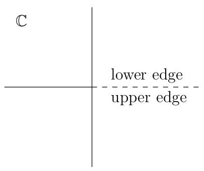

| Previous document | Next document |
Julia Sets
In a previous document, we have presented some properties of the logistic map. More precisely, we have looked at the iterations of the real valued function f𝜇 defined by f𝜇(x) = 𝜇x(1-x) for x ∈ ℝ and various values of 𝜇.
The logical next step is to consider the iterations of complex valued functions defined on the complex plane.
A Little Bit of Theory
This section requires some knowledge of topology and complex analysis. Some reader may choose to skip this section and to read only the about the graphical representation of Julia sets for polynomial functions. In this document, we prove or sketch the proof of only some of the results that we state. For the full proofs of all the stated results, the reader should consult the listed at the end of this document.
In this document, a connected component of a set U is a connected subset V of U such that there does not exist any connected subset W of U with V ⫋ W.
Basic Concepts of Complex Analysis
We consider holomorphic functions R:ℂ → ℂ where ℂ is the Riemann sphere (a complex manifold). Using a stereographic projection, we can define a one-to-one conformal map from ℂ onto ℂ ∪ {∞}, the compactification of the complexes plane. The holomorphic functions R:ℂ → ℂ are rational functions R = P/Q where P and Q are two polynomials. We may assume that R = P/Q is in reduced form; namely, P and Q do not have common factors.
The degree of a rational function R:ℂ → ℂ, denoted deg(R), is the largest value between the degree of P and the degree of Q. We say that v ∈ ℂ is a preimage of w ∈ ℂ of multiplicity m if m is the largest positive integer such that di(R(z)-w)/dzi|z=v = 0 for 0 ≤ i < m. If R is a rational function of degree k and w ∈ ℂ, then the number of elements in the set of all the preimages of w counted with multiplicity is k. In this document, we will only consider rational functions that are of degree greater or equal to 2.
Definition: We say that two rational functions R1:ℂ → ℂ and R2:ℂ → ℂ are conformally conjugate if there exists a Möbius transformation H:ℂ → ℂ such that H∘R1 = R2∘H.
It is taught in a first course on complex analysis that Möbius transformations are bijections and preserve angles.
Example: Every polynomial function R of the form R(z) = αz2+βz+γ is conformally conjugate to a polynomial function P of the form Pc(z) = z2+c. Let H(x) = αz+β/2. Then H∘R = Pc∘H yields
In the particular case where α = -β = -𝜇 and γ = 0, we get that the logistic function f𝜇 is conformally conjugate to the function Pc where c = 𝜇-𝜇2/4. When 𝜇 ≥ 4, we have seen that f𝜇 : 𝛥𝜇 → 𝛥𝜇 is chaotic. We may therefore expect that Pc:ℂ → ℂ will have a strange behaviour for c ≤ 0.
Let Bε(w) = {z ∈ ℂ : |z-w| < ε}. It follows from the Riemann Mapping theorem that any simply connected Riemann surface U ⊂ ℂ is conformally equivalent to one of B1(0), ℂ or ℂ; namely, there exists an analytic bijection f between U and one of B1(0), ℂ or ℂ.
Remark: For the reader who may not have seen Riemann surfaces before, the simplest example of a Riemann surface is given by the function f: ℂ → ℂ defined by f(z) = z2. Let Si = ℂ ∖ {x : r > 0} for i = 0,1. The Si are two copies of the complex plane after it has been cut along the positive section of the x axis.

If we glue the upper edge of S0 to the lower edge of S1 and the upper edge of S1 to the lower edge of S0, we get the Riemann surface S associated to the function f. The function f:ℂ → S is now a continuous bijection. We have that f: { r cos(θ) + r sin(θ) : r ≥ 0 and jπ < θ < (j+1)π} → Sj is a bijection for j = 0,1. The origin is called a branch point because it belongs to S0 and S1. If we consider f: ℂ → ℂ, then ∞ is also a branch point. The reader should try to visualize the Riemann surface associated to the function f: ℂ → ℂ defined by f(z) = zn with n a positive integer.
This is not a rigorous definition of Riemann surfaces but it is sufficient to understand the behaviour of rational functions later.
Definition: A family 𝓕 of holomorphic functions defined on an open set V ⊂ ℂ is normal on V if every sequence of functions {fn}n>0 from 𝓕 has a subsequence {fnk}k>0 that converges uniformly on compact subsets of V.
The Arzela-Ascoli theorem states that a family of holomorphic functions defined on an open set V ⊂ ℂ is normal if and only if it is equicontinuous on every compact subset of V. Moreover, it can be proved that a family 𝓕 of holomorphic functions defined on an open set V ⊂ ℂ is normal if it is locally uniformly bounded; namely, for every compact set K ⊂ V, there exists a constant CK such that maxz∈K|f(z)| ≤ CK for all f ∈ 𝓕. This result is due to Montel as is the following theorem.
Theorem (Montel): Let 𝓕 = {fn}n>0 be a family of holomorphic functions defined on an open set V ⊂ ℂ. If there exists three distinct points z1,z2,z3 ∈ ℂ such that fn(z) ≠ z1,z2,z2 for all z ∈ V and all n, then 𝓕 is normal on V.
The following theorem is very useful in the study of rational functions R:ℂ → ℂ.
Theorem (Schwarz): Suppose that f:B1(0) → B1(0) is an holomorphic function such that f(0) = 0. Then |f(z)| ≤ |z| for all z ∈ B1(0) and |f'(0)| ≤ 1. If |f(z)| = |z| for some z ∈ B1(0)∖{0} or |f'(0)| = 1, then f(z) = eiθz for some θ ∈ ℝ.
Definition of Julia Sets
Our main goal is to study the families of holomorphic functions defined by 𝓕 = {Rn}n>0 where R:ℂ → ℂ is a rational function.
Definition: Let R:ℂ → ℂ be a rational function. A point z ∈ ℂ is a stable point of R if there exists an open neighbourhood V of z such that the family {Rn}n>0 is normal on V. The set of all stable points of R is denoted SR. The Julia set of R is the set JR = ℂ ∖ SR.
The definition of Julia sets given above is the definition given by G. Julia and P. Fatou in the papers that they published at the beginning of the twentieth century. We present later an equivalent definition of Julia sets which is useful to draw Julia sets.
Since SR is an open set, we have that JR is a closed set. Since R is an open mapping, it is not hard to prove that R(SR) ⊂ SR and R-1(SR) ⊂ SR; namely, SR is completely invariant under the action of R. It follows that JR is also completely invariant under the action of R; namely, R(JR) ⊂ JR and R-1(JR) ⊂ JR. It is easy to prove that JRn = JR for n ≥ 1. The following result is a consequence of the monodromy theorem in complex analysis.
Theorem: If R:ℂ → ℂ is a rational function, then JR ≠ ∅.
Proof: The proof is by contradiction. If JR = ∅, then 𝓕 = {Rn}n>0 is normal on ℂ. Therefore, there exists a subsequence {Rnk}k>0 that converges uniformly on compact subsets of ℂ. Since the space of holomorphic function on ℂ (i.e. rational functions) is closed in this topology, the limit of this subsequence is a holomorphic function T on ℂ (i.e. a rational functions) of finite degree. However, deg(Rnk) → ∞ as k → ∞ instead of converging to deg(T) < ∞ as it should. ∎
Example: Let Pc: ℂ → ℂ be the function defined by Pc(x) = z2+c for c ∈ ℂ arbitrary but fixed.
We have that S1 = {z : |z| = 1} is completely invariant under the action of P0. Moreover, {P0n}n>0 converges uniformly on compact subsets of B1(0) to the constant function f ≡ 0. Likewise, {P0n}n>0 converges uniformly on compact subsets of ℂ ∖ B1(0) to the constant function f ≡ ∞. Hence, it follows from that JR ⊂ S1. It also follows from the previous two observations that, if V is an open set such that V ∩ S1 ≠ ∅, then no subsequence of {P0n}n>0 can converge uniformly on a compact subset K of V such that K ∩ B1(0) ≠ ∅ and K ∩ ℂ ∖ B1(0) ≠ ∅ because the limit of this subsequence would have to be a continuous function T with T(z) = 0 for |z|<1 and T(z) = ∞ for |z|>1. This is not possible. Thus JR = S1.
Since P0|S1 is topological conjugate to the function T:S1 → S1 defined by T(θ) = 2θ, and since T is chaotic on S1 as we have seen in the document , we can conclude that P0 is chaotic on JR. We will see later that this is typical of Julia sets.
As we will see, Julia sets are not usually simple curves as in the previous example. Moreover, Julia sets may not have an empty interior as in the previous example. Recall that the interior of a set K is the largest open subset contained in K. For instance, we will prove later that the Julia set of the rational function R:ℂ → ℂ defined by R(z) = (z-1)2/z2 is ℂ.
By definition of Julia sets, if z ∈ JR and V is an open neighbourhood of z, then the set EV = ℂ ∖ ⋃n>0 Rn(V) has at most two elements. The elements of EV are called exceptional points. Let 𝒱 be the collection of all open neighbourhoods of z and Ez = ⋃V∈𝒱 EV. The set Ez has also at most two elements (the proof is left to the reader.)
Proposition: If R:ℂ → ℂ is a rational function and z ∈ JR, then Ez is completely invariant.
Proof: We first prove that Ez is backward invariant (namely, R-1(Ez) ⊂ Ez). Let V be an open neighbourhood of z and EV = ℂ ∖ WV where WV = ⋃n>0 Rn(V). We have that
⇒ R(w) = Rm+1(v) for some m > 0 and v ∈ V
⇒ R(w) ∈ WV .
Thus R(w) ∉ WV ⇒ w ∉ WV. Hence R(w) ∈ EV ⇒ w ∈ EV; namely, R-1(EV) ⊂ EV. Since this is true for all open neighbourhood V of z, we have that R-1(Ez) ⊂ Ez. To prove that R is also Forward invariant (namely, R(Ez) ⊂ Ez), we use the fact that R is onto, and that R-1(Ez) ⊂ Ez are two finite sets. Therefore, they must have the same finite number of elements. Hence R-1(Ez) = Ez and R(Ez) = Ez. ∎
If Ez = {∞}, then R is a polynomial function. If Ez = {w} ⊂ ℂ, then R is conformally conjugate to a polynomial function. More precisely, if H(z) = 1/(z-w), then T = H∘R∘H-1 is a polynomial function because ∞ is now an exceptional point of T.
If Ez = {v,w} ⊂ ℂ and H(z) = (z-v)/(z-w), then T = H∘R∘H-1 where G = H(Ez) = {0, ∞} is completely invariant under the action of T. We either have that T(0) = 0 and T(∞) = ∞, or T(0) = ∞ and T(∞) = 0. In the first case, T(z) = zd where d is the degree of the rational function R (and T) because the only preimage of 0 is 0 of multiplicity d. In the second case, T(z) = z-d because the only preimage of ∞ is 0 of multiplicity d. In conclusion, R is conformally conjugate to T defined by either T(z) = zd or T(z) = z-d. If Ez = {v,∞} and H(z) = z-v, then T = H∘R∘H-1 where G = H(Ez) = {0, ∞} is completely invariant under the action of T. We can then use the previous reasoning.
It follows from the previous discussion that the set
Ez is independent of
z ∈ JR. We may therefore
defined the set of exceptional points
𝓔R
associated to a rational function R as
𝓔R = Ez for any
z ∈ JR.
We will see later that exceptional points are stable points because
the exceptional points are
either super-attractive fixed point
or
super-attractive periodic points
. Thus
𝓔R ∩ JR
= ∅.
We remind the reader that we consider only rational functions of
degree greater or equal to 2.
The behaviour of R near a stable point is fairly simple. Suppose that w is a stable point of R and {Rnk(w)}k>0 converges to q(w). It follows from the equicontinuity of {Rn}n>0 that {Rnk(z)}k>0 converges to a point q(z) if z is closed enough to w, and q(z) → q(w) if z → w. However, the behavior is not as simple if w is not a stable point of R. More precisely, we have the following result.
Proposition Ⅰ: Let R:ℂ → ℂ be a rational function. If z ∈ JR and w ∈ ℂ ∖ 𝓔R, then JR is a subset of the accumulation points of ⋃n>0 R-n({w}). In particular, if w ∈ JR, then JR is the closure of ⋃n>0 R-n({w}).
Proof: The proof is not hard. Suppose that v ∈ JR and that V is an open neighbourhood of v. Since v is not a stable point, there exists a positive integer n such that w ∈ Rn(V) because w ∈ ℂ ∖ 𝓔R. Thus R-n({w}) ∩ V ≠ ∅. Since this is true for all open neighbourhoods V of v, we have that v is an accumulation points of ⋃n>0 R-n({w}). To prove the second statement of the previous proposition, it suffices to note that ⋃n>0 R-n({w}) ⊂ JR because R is completely invariant. ∎
Proposition Ⅱ: If J is a completely invariant set under the action of a rational function R:ℂ → ℂ, then J contains one point, two points or infinitely many points.
Proof (sketch): It suffices to prove that if J is finite, then it must contain one or two points. Suppose that J = {z1,z2,...,zk}. Since J is completely invariant, there exists a positive integer n such tat Rn(zj) = zj for 1≤j≤k. Suppose that the degree of Rn is d. Since each zj has only itself as preimage, the deficiency of each zj is d-1. Since the sum of all deficiencies, called the total deficiency, of a rational function of degree d is 2d-2, we have that k ≤ 2. The reader should consult for the definition of deficiency and its properties. ∎
The next result follows from the previous proposition.
Proposition Ⅲ: If R:ℂ → ℂ is a rational function, then JR is an infinite set.
Proof (sketch): We have from that JR contains either one point, two points or infinitely many points because JR ≠ ∅. If JR = {w}, then we can proceed as we have done for Ez = {w} above to show that R is conformally conjugate to a polynomial function because JR is completely invariant. Since ∞ is a stable point for a polynomial function, we have that w is a stable point. This contradicts the definition of JR. If JR = {v,w}, then we can proceed as we have done for Ez = {v,w} above to show that R is conformally conjugate to the function T defined by either T(z) = zd or T(z) = z-d. Since 0 is a stable point for T defined by T(z) = zd and ∞ is a stable point for T defined by T(z) = z-d, we have that v or w is a stable point. This again contradicts the definition of JR. ∎
The next result follows from and .
Proposition: If R:ℂ → ℂ is a rational function, then JR is a perfect set.
The Julia sets have more interesting properties. We list a couple below. More fascinating properties will be given later.
Proposition Ⅳ: If R:ℂ → ℂ is a rational function, then there is no closed and completely invariant proper subset of JR.
Proof: Suppose that S is closed and completely invariant subset of JR, and that w ∈ S. Since S is completely invariant, we have that ⋃n>0 R-n({w}) ⊂ S ⊂ JR. Since S is closed and w ∈ JR, we get from that JR ⊃ S = S ⊃ ⋃n>0 R-n({w}) = JR. ∎
Proposition: If R:ℂ → ℂ is a rational function and JR has a non-empty interior in ℂ, then JR = ℂ.
Proof: Suppose that V ⊂ JR is an open set. Since all points of JR are not stable, we get from that ⋃n>0 Rn(V) = ℂ ∖ E where the E has at most two elements. Since JR is completely invariant, we have that JR ⊃ ⋃n>0 Rn(V) = ℂ ∖ E. Finally, since JR is closed, we get that JR = JR ⊃ ℂ ∖ E = ℂ. ∎
An Equivalent Definition of Julia Sets
As we have done so far, we assume that R:ℂ → ℂ is a rational function. Recall that a point z ∈ ℂ is a periodic point of period n of R if n is the smallest positive integer such that Rn(z) = z. If n=1, we say that z is a fixed point of R. A point z is eventually periodic if there exist two integers n > m ≥ 0 such that Rn(z) = Rm(z). If we assume that n is the smallest integer greater than m such that Rn(z) = Rm(z) is satisfied, then {Ri(z)}i≥m is a periodic orbit of period k = n-m.
Suppose that z ∈ ℂ. The (positive) orbit associated to z is the sequence {zi}i≥0 where z0 = z and zj = R(zj-1) for j ≥ 1. In particular, if z is a periodic point of period n of R, then {zi}i≥0 is a periodic orbit because zn=z0.
Definition: Suppose that z is a periodic point of period n of a rational function R:ℂ → ℂ and that λ = (Rn)'(z). We say that z (or the periodic orbit {zi}i≥0 associated to z) is
- super-attracting if λ = 0,
- attracting if 0 < |λ| < 1,
- neutral or indifferent if |λ| = 1, or
- repelling if |λ| > 1.
In the previous definition, it follows from the chain rule that (Rn)'(zi) = λ for all zi on the orbit {zi}i≥0 associated to z.
Definition: Suppose that w is a fixed point of a rational function R:ℂ → ℂ. We say that R can be linearized at w if there exist
- two open neighbourhoods W and V of w with R(W) ⊂ V,
- an analytic homeomorphism H:V → B1(0), and
- a linear function L defined by L(z) = λz for all z ∈ ℂ where λ ∈ ℂ is a constant
such that H(w) = 0 and H∘R = L∘H on W.
Proposition: If w is an attracting fixed point of a rational function R:ℂ → ℂ, then R can be linearized at w. In the definition of linearization above, we may select V and W such that W = V. Moreover, 0<|λ|<1.
Proposition: If w is a repelling fixed point of a rational function R:ℂ → ℂ, then R can be linearized at w. We have that |λ|>1 in the definition of linearization.
In the previous proposition, there is no open set W such that R(W) ⊂ W as we can have for an attracting fixed point.
Proposition: Suppose that w is a super-attracting fixed point of a rational function R:ℂ → ℂ and that k>0 is the smallest positive integer such that R(k)(w) ≠ 0. Then there exist
- an open neighbourhood W of w with R(W) ⊂ W, and
- an analytic homeomorphism H:W → B1(0)
such that H(w) = 0 and H(f(w)) = (H(w))k for all w ∈ W.
The following proposition is a consequence of the previous three propositions.
Proposition: A fixed point w of a rational function R:ℂ → ℂ is a stable point if w is an attracting or super-attracting fixed point. The fixed point w is not stable if it is a repelling fixed point.
There is no clear results associated to neutral fixed points of a rational function R:ℂ → ℂ. Suppose that w is a neutral fixed point of a rational function R and that R'(w) = λ. To linearize R at w, we need to find an analytic homeomorphism H, and open neighbourhoods W and V of w such that H(w) = 0 and H∘R = λH on W. This last equation is called the Schröder functional equation. It has been proved that if there exists a function H satisfying the Schröder functional equation, then w is a stable point. The converse is also true. It has also been proved that there is no function H satisfying the Schröder functional equation if λ is a root of unity. Even when λ is a not root of unity and |λ|=1, there may not be any function H satisfying the Schröder functional equation. For instance, it has been proved by C. Seigel that there is no function H satisfying the Schröder functional equation if λ = e2πiα with α an irrational number for which there exist a,b > 0 such that |α-p/q|>1/qb for all integers p and q. The measure of the set of λ that satisfy the previous condition is equal to the measure of the unit circle.
It follows from the previous proposition that the set 𝓡R of repelling periodic points of a rational function R:ℂ → ℂ is a subset of JR. Since JR is closed, we have that 𝓡R ⊂ JR. In fact, we have a stronger result.
Theorem Ⅴ: If R:ℂ → ℂ is a rational function, then 𝓡R = JR.
The proof of this theorem can be divided into several steps. We list these steps below without proving them. A proof of each step can be found in . We first need to introduce some definitions.
Definition: A critical point of a rational function R:ℂ → ℂ is a point w ∈ ℂ where R fails to be a local homeomorphism. A critical value of R is the image by R of a critical point of R.
From the definition of the derivative of a function in complex analysis, we have that a point w ≠ ∞ is a critical point if R'(w) = 0.
Definition: The basin of attraction of a (super-) attracting fixed point z of a rational function R:ℂ → ℂ is the set Ws(z,R) = {v : Rn(v) → z as n → ∞}. The immediate basin of attraction of z, denoted Wi(z,R), is the connected component of Ws(z,R) that contains z.
It follows from that {Rn}n>0 is normal on Ws(z,R). Moreover, Wi(z,R) is the largest set containing the (super-) attracting fixed point z and on which {Rn}n>0 is normal.
Proposition: If R:ℂ → ℂ is rational function and z is an (super-) attractive fixed point of R, then ∂ Ws(z,R) = JR, where ∂ is the symbol used to denote the boundary of a set.
Proof: We obviously have that ∂ Ws(z,R) ⊂ JR. Since Ws(z,R) is completely invariant, we have that ∂ Ws(z,R) is a closed completely invariant subset of JR. It follows from that ∂ Ws(z,R) = JR.
Example: If we use Newton's method to approximate the roots of the function f defined by f(z) = z3-1, we have to iterate the function R defined by R(z) = z-f(z)/f'(z) = (2z3+1)/(3z2). The polynomial z3-1 has three roots in the complex plane. z=1 is obviously one of them. Since R'(1) = 0, we have that z=1 is an (super-) attracting fixed point. The region in black in the following figure is Ws(1,R). Its boundary is the Julia set JR of R.

Proof of (sketch): Let R:ℂ → ℂ be a rational function of degree d. Moreover, let 𝓒R be the set of critical points of R, 𝓟R be the set of periodic points of R and 𝓠R be the set of poles of R.
- The set 𝓒R has at most 2d-2 elements. The proof of this result is based on the concept of deficiency that we have introduced previously.
- JR ⊂ 𝓟R. To proof this result, we prove that JR ∖ ({∞} ∪ R(𝓒R) ∪ 𝓠R) ⊂ 𝓟R. Since {∞} ∪ R(𝓒R) ∪ 𝓠R is finite set and JR is closed and perfect, we get that JR ⊂ 𝓟R.
- The number of (super-) attracting periodic orbits of R is at most 2d-2. This result is a corollary of the fact that Wi(z,Rn) contains at least one critical point if z is a (super-) attracting periodic point.
- If k1 is the number of
(super-) attracting periodic orbits and k2
is the number of neutral periodic orbits, then
k1+k2/2 ≤ 2d-2.
This result is a consequence of the fact that at least
k2/2 of the attractive periodic orbits are
continuations
of neutral periodic orbits. - Since the number of non-repelling periodic orbits is finite according to (4), it follows from (2) that JR ⊂ 𝓟R = 𝓡R. But, we have seen earlier that 𝓡R ⊂ JR. ∎
There is an interesting corollary to the previous theorem.
Corollary: Let R:ℂ → ℂ be a rational function, and K be a closed subset of ℂ such that K ∩ 𝓔R = ∅. If V is an open neighbourhood of a point z ∈ JR, then there exists an integer k > 0 such that K ⊂ Rk(V). On particular, there exists an integer k > 0 such that JR = Rk(V ∩ JR).
Proof: To prove the first part of this corollary, it suffices to consider a repelling periodic point w ∈ V. Suppose that the period of w is n. Since w is repelling, there exists an open neighbourhood U ⊂ V of w such that U ⊂ Rn(U). Since K ∩ 𝓔R = ∅ and w is not a stable point of Rn, we have that K ⊂ ⋃m>0 Rmn(U). Moreover, since Rmn(U) ⊂ R(m+1)n(U) for m > 0 and K is a compact subset of ℂ, there exists an integer m>0 such that K ⊂ Rmn(U) ⊂ Rmn(V). We get the conclusion for the first part of the corollary with k = mn. For the second part of the corollary, if we take K = JR, we get from the first part of the corollary that there exists an integer k>0 such that JR ⊂ Rk(V). Since JR and SR are completely invariant under the action of R, we have that JR ⊂ JR ∩ Rk(V) = Rk(V ∩ JR) ⊂ JR. ∎
It follows from the previous corollary that R is topologically transitive on JR. Since JR is completely invariant, the second statement of implies that R has sensitive dependence on initial conditions. Since the repelling periodic points are dense in JR according to , we can conclude that R is chaotic on JR.
The last part of the previous corollary can be considered as a form
of self-similarity for Julia sets. There exists a notion
of quasi-self-similarity
for the Julia sets of
rational functions that satisfy the next definition. We will not say
anything more on this subject in ths document. The reader could
consult the at the end of this document for more information.
Definition: Let R:ℂ → ℂ be a rational function, 𝓒R be the set of all critical points of R, and K be the closure of the set ⋃z∈𝓒R {Rn(z)}n≥0. The rational function R is expanding if JR ∩ K = ∅.
Since ∂ Wi(z,R) ⊂ JR. the next proposition supports the possibility that the structure of JR could be quite complex.
Proposition Ⅵ: If z is an attracting
fixed point of a rational function
R:ℂ
→ ℂ,
then Wi(z,R) is either a simply
connected set or a connected sets with
infinitely many holds
(represented by closed
connected components in ℂ
∖ Wi(z,R)).
In the last case of the previous proposition, ∂ Wi(z,R) is composed of infinitely many closed connected components.
Set of Stable Points
To better understand the structure of the Julia set JR of a rational function R:ℂ → ℂ, it is useful to behaviour the structure of the set of stable points SR of a rational function R under the action of R. We only summarize some of the results on this topic to get a better understanding of the complexity of the action of R.
We already know that SR is completely invariant under the action of R. It is clear that a rational function R maps connected components to connected components. Given a connected component D of SR, we may define the orbit {Ri(D)}i≥0 in SR. A connected component of SR is eventually periodic if there exist two integers n > m ≥ 0 such that Rn(D) = Rm(D). We then have that {Ri(D)}i≥m is a periodic orbit in SR whose period is a divider of n-m. The following theorem describes the orbits in SR.
Theorem (Sullivan): Let R:ℂ → ℂ be a rational function. Every connected component D of the set of stable points SR of R is eventually periodic.
Given two connected components D1 and D2 of SR, we write that D1 ∼ D2 if they eventually belong to the same periodic orbit. This is an equivalence relation of SR.
Theorem (Shishikura): Let R:ℂ → ℂ be a rational function of degree d. There are at most 2d-2 equivalent classes of connected components in SR/∼.
It follows from the previous theorem that there are at most 2d-2 periodic orbits in SR.
Definition: Let R:ℂ → ℂ be a rational function. A Sullivan domain is a connected component of SR that belongs to a periodic orbit in SR.
Let S be a Sullivan domain that belongs to a periodic orbit of period k.
- S is an attracting domain if S contains an attracting fixed point z of Rk and S = Wi(z,Rk).
- S is a super-attracting domain if S contains a super-attracting fixed point z of Rk and S = Wi(z,Rk).
- S is a parabolic domain if the boundary ∂S of S contains a neutral fixed point z of Rm, where m is a divider of k, and S ⊂ Wi(z,Rk).
- S is a Siegel disk if S is simply connected, contains a fixed point z of Rk, and Rk|S is analytically conjugate to a rotation by an irrational angle θ; namely, there exists an analytic homeomorphism H:S → B1(0) such that H(z) = 0, and H∘(Rk) = L∘H where the function L:B1(0) → B1(0) is defined by L(w) = eiθw.
- S is a Herman ring if S is conformally equivalent to an annulus of the form A = {w : r1 < |w| < r2} and Rk|S is analytically conjugate to a rotation by an irrational angle θ; namely, there exists an analytic homeomorphism H:S → A such that H∘(Rk) = L∘H where the function L:A → A is defined by L(w) = eiθw.
If a connected component of a periodic orbit in SR belongs to one of the five categories of Sullivan domains mentioned above, then obviously all the other connected components of this periodic orbit also belong to this category. We have the following result.
Theorem: If R:ℂ → ℂ is a rational function, then all the connected components of a periodic orbit in SR belong to one of the five categories of Sullivan domains listed above.
It does not seem to be easy to find rational functions whose set of stable points admit Herman rings. states that the rational function R:ℂ → ℂ defined by R(z) = (e2πiα(z-a)2)/(z(1-az)2) for some values of α and a have a set of stable points SR that contains an Herman ring containing the unit circle. The existence of α and a is ensured by a theorem of (see the at the end of this document.)
The following result is a corollary of the previous theorem and the fact that all Sullivan domains but the super-attracting domains require the presence of the orbit of a critical point which is not eventually periodic. Moreover, the super-attracting domain contains a periodic critical point.
Corollary Ⅶ: Let R:ℂ → ℂ be a rational function. If all the critical points of R are eventually periodic, and no critical point is periodic, then JR = ℂ.
We can use this corollary to prove our previous claim that the Julia set of R(z) = (z-1)2/z2 is ℂ. The critical points of R are 2 and ∞, and they are all eventually periodic and not periodic because, for z0 = 2, we get the orbit {Rn(z)}n≥0 = {2, 0, ∞, 1, 1, 1, ...}.
Proposition: Let R:ℂ → ℂ be a rational function. If S is a completely invariant connected component of SR, then JR = ∂S, the boundary of S.
Proof: To prove this result, we first note that ∂S is completely invariant because S is a completely invariant. Moreover, ∂S ⊂ JR by definition of Julia sets. Thus ∂S is a closed and completely invariant subset of JR. It follows from that ∂S = JR. ∎
Proposition Ⅷ: Let R:ℂ → ℂ be a rational function of degree d.
- There are at most two distinct completely invariant and simply connected components of SR.
- If the number of connected components of SR is finite, then SR is the union of at most two distinct connected components.
Proof (sketch): The proof of (1) is based on the concept of deficiency previously mentioned. For (2), suppose that there are more than two connected components in SR. Since the number of periodic orbits in SR is at most 2d -2, there exists a positive integer k such that all the connected components of SR are completely invariant under the action of Rk. It follows from (1) that one of them is not simply connected. Let A be a connected component of SR that is not simply connected, and B be any other connected component of SR. If H:ℂ → ℂ is the Möbius transformation defined by H(z) = 1/(z-v) where v ∈ B, then T = H∘Rk∘H-1 is a rational function such that H(A) and H(B) are connected components of the set of stable points of T, and are completely invariant under the action of T. Moreover, ∞ ∈ H(B) and H(A) is not simply connected. Since H(A) is not simply connected, there exist a closed curve γ ⊂ H(A) that cannot be homotopically contracted in H(A) to a point. We may also assume that γ is of index one (basically, γ looks like a circle.) Let W be the open region bounded by γ that does not contain ∞. We have that the Tn are analytic functions on the open set H(A) ∪ W. Note that T has no pole in H(A) ∪ W because H(B) ∩ (H(A) ∪ W) = ∅, ∞ ∈ H(B) and H(B) is completely invariant under the action of T. Thus, we can use the Cauchy integral formula to prove that the family of rational functions {Tn}n>0 is normal on W. More precisely, we have that
for all w ∈ W. Since H(A) is bounded, there exists C such that supz∈H(A) |z| ≤ C. Moreover, since H(A) is completely invariant, we have that Tn(H(A)) ⊂ H(A) for all n > 0. It follows that |Tn(z)| ≤ C for all z ∈ H(A) and all n. Thus |Tn(z)| ≤ C for all z ∈ γ and all n. Hence, we get that
for all w ∈ W and all n. This proves that {Tn}n>0 is locally bounded on W and therefore normal on W. But W ∩ JT ≠ ∅ because JT = H(JRk) = H(JR). This is a contradiction. ∎
Example A: The Julia set JPi/2 of the function Pi/2 is represented in the figure below. We have that JPi/2 is a closed connected set. The set SPi/2 is composed of two simply connected components. One of them contains ∞.

Example B: The Julia set JP0.3 of the function P0.3 is represented in the figure below. We have that JP0.3 is composed of infinitely many closed connected components. The set SP0.3 is composed of a single connected component that is not simply connected.

Example C: Let c be one of the non-zero
roots of Pc2(c) = c. More
precisely, let c ≈ -0.12256 + 0.74486i.
The Julia set JPc
of the function Pc is represented in
the figure below. We have that
JPc is a connected set.
The set SPc is composed of
infinitely many simply connected components. However, at most two of
them are completely invariant. This Julia set is called the
Douady's Rabbit. This Julia set occupies a
central position
in the analysis of the Mendelbrot
set in the .

Polynomial Functions
The next propositions will be useful to draw Julia sets for polynomial functions. A proof similar to the proof of yields the following result.
Proposition: Let P:ℂ → ℂ be a polynomial function. All bounded connected components of the set of stable points SP are simply connected.
The point ∞ plays an important role in the study of Julia sets of polynomial functions. We have that ∞ is a critical point, an exceptional point and a super-attracting fixed point for a polynomial function P. In particular, there exists an open neighbourhood of ∞ on which P is conformally conjugate to the function T defined by T(z) = zd where d is the degree of P. Since ∞ is always a stable point of a polynomial function, the Julia set of a polynomial function is contained in ℂ; namely, JP is bounded. We have that Wi(∞,P) = Ws(∞,P) ⊂ SP. Thus SP ≠ ∅. There is a similar result to with a similar proof for polynomial functions.
Proposition: Let P:ℂ → ℂ be a polynomial function. If all the critical points of R except for ∞ are eventually periodic, and none of the finite periodic points is a critical point, then ℂ = JR ∪ Wi(∞,P).
The Julia sets that satisfy the conclusion of the previous proposition have a special name.
Definition: Let R:ℂ → ℂ be a rational function. If the stable set SR is composed of only one simply connected component and the Julia set JR is locally connected, then JR is called a dendrite.
We recall that a set A ⊂ ℂ is locally connected if, for every z ∈ A, there exists an open neighbourhood U of z such that U ∩ A is a connected set in the induced topology on A.
Example: The Julia set JPi of the function Pi is represented in the figure below. We have that JPi is a dendrite.

Proposition: If P:ℂ → ℂ is a polynomial function, then none of the Sullivan domains of P is an Herman ring.
Proof: Suppose that S is an Herman ring for P. If we refer to the definition of Herman ring, we have that the image by H-1 of a circle in A is an invariant curve γ under the action of P. Let U be the open set bounded by γ that does not contain ∞. Since JP ∩ U ≠ ∅ and the set of exceptional points is 𝓔R = {∞}, we have that ⋃n>0 Pn(U) = ℂ. But this is a contradiction of the maximum principal for analytic functions which says that the maximum of |Pn| on U is reached on the boundary γ and therefore supz∈U |Pn(z)| ≤ supz∈γ |Pn(z)| ≤ supz∈γ |z| < ∞. ∎
Proposition Ⅸ: Let P:ℂ → ℂ be a polynomial function. The following statements are equivalent.
- P|Wi(∞,P) is conformally conjugate to the function T defined by T(z) = zd on the exterior of a circle centred at the origin.
- Wi(∞,P) is simply connected.
- JR is connected.
- Wi(∞,P) ∩ 𝓒P = {∞}.
The proof of this results is not too complicate but is long. It can be found in . Recall that 𝓒P is the set of critical points of P. The last statement of the previous proposition says that the orbits of the critical points are bounded.
We have seen the shift on two symbols in the document . This concept can be generalized to more symbols.
Definition: Let Σn = {(s0s1s2...) : 0 ≤ sk < n for all k ≥ 0}. The shift map on n symbols is the map σ : Σn → Σn defined by σ(s0s1s2...) = (s1s2...).
The next Theorem states that, under some conditions, the chaotic behaviour of a polynomial function P on JP can be described by a shift map .
Theorem Ⅹ: Let P:ℂ → ℂ be a polynomial function of degree d. If 𝓒P ⊂ Wi(∞,P), then JP is totally disconnected and P|JP is conjugate to the shift map on d symbols.
The full proof is given in .
Example: In , we have that 0 is the only finite critical point of Pi/2 and Pni/2(0) → -0.1360 + 0.3931i. It follows from that JPi/2 is connected.
In , we still have that 0 is the only finite critical point of P0.3. However, Pn0.3(0) → ∞. It follows from and that JPi/2 is the union of infinitely many closed connected components. Moreover, we get from that JP is totally disconnected.
Finally, in , we have that 0 is the only finite
critical point of Pc where
c ≈ -0.12256 + 0.74486i,
and the sequence Pnc(0) is bounded
because {Pnc(0)}n≥0
approaches
the periodic orbit
It follows from that JPc is connected.
If P is a polynomial function of degree 2, then we get from , and that JP is a connected set if the orbit of its finite critical point is bounded, and JP is totally disconnected otherwise.
There are many more results about Julia sets and also many fascinating mathematical questions about them that are still unsolved.
Graphical Representation of Julia Sets
The best method to draw the Julia set of a rational function R:ℂ → ℂ is based on . In particular, if we can find a point w ∈ JR, then JR is the closure of ⋃n>0 R-n({w}). However, computation time or memory space of the computer may be some constrains on the use of this method. Also, the resolution of the computer screen may affect the display of the figure. This method is implemented in the document . Thus, this method is reserved for situations where we have access to a good computer with a high resolution computer screen. For an application, as the one below, that is written in JavaScript and is used for a website, it is preferable to use the less demanding method describe below.
In the reminder of this section, we consider the polynomial function Pc defined by
for c ∈ ℂ fixed but arbitrary.
To draw the Julia set JPc of Pc, we use the fact that JPc = ∂ Ws(∞,Pc), the boundary of the basin of attraction of the fixed point ∞ of Pc. In fact the graphical application below draws the filled Julia set of Pc; namely, the set 𝛺c = ℂ ∖ Ws(∞,Pc). Thus, the boundary ∂ 𝛺c of 𝛺c is the Julia set JPc of Pc.If |z| > K = max{|c|,2}, we have that |Pcn(z)| → ∞ as n → ∞. To prove this result, we first note that |w2| = |w2+c-c| ≤ |w2+c|+|c| implies that |w2| - |c| ≤ |w2+c| = |Pc(w)| for all w ∈ ℂ. If |w| > K, then |w| = 2+δ for some δ > 0. Hence,
= |w|(|w|-1) = |w|(1 + δ) .
We can draw two conclusions from this inequality. First, if |w| > K, then |Pc(w)| > |w| > K. Second, we can then use the inequality above to get
where the first inequality is true because |Pc(w)| > K. By induction, we get that
as n → ∞. We therefore have that Ws(∞,Pc) = {w ∈ ℂ : |Pcn(w)| > K for some n}.
For the purpose of drawing filled Julia sets, we select a large number N, say N = 50, and declare that z ∈ 𝛺c if |Pcn(z)| < K for all n ≤ N. Obviously, we do not get exactly 𝛺c but, if N is large enough, it is a sufficiently accurate approximation of 𝛺c for the computer screens whose resolution are limited by the number of pixels. When drawing Julia sets, we have to take into account that the computational time increases when N increases.
When JPc is a dendrite, then 𝛺c = JPc has an empty interior. Therefore, in this situation, it is possible that the figure be almost empty if most of the pixels on the computer screen are not associated to points in 𝛺c.
We can use the graphical application below to draw some full Julia sets. Given a complex number c, the points z of the complex plane that are drawn in black are the points that belong to the set 𝛺c. The boundary of the area in black is therefore the Julia set of Pc.
|
To zoom in on a region of the Julia set, click with the left button of the mouse on the region of interest in the figure. Only decimal numbers can be used as values for Real(c) and Im(c). An expression like 1/2 is not accepted because the content of these fields is not evaluated mathematically. |
The content of this document is mostly based on the following books and articles.
- V. Arnold, Small denominators: I: On the mappings of the circumference onto itself, Amer. Math. Soc. Transl. (2) 46 (1965), 213-284.
- P. Blanchard, Complex Analytic Dynamics of the Riemann Sphere, Bull. Amer. Math. Soc. (N.S.) 11 (1984), 85-141.
- R. L. Devenay, An Introduction to Chaotic Dynamical Ssystems, The Benjamin/Cummings Publishing Co., Inc. (1986).
- L. Keen, Julia Sets, in Chaos and Fractals: The Mathematics Behind the Computer Graphics, R. L. Devaney and L. Keen, Editors, Proceeding of symposia in applied mathematics, AMS short course lecture notes (1989), 57-74.
- H.-O. Peitgen, H. jürgens and D. Saupe, Chaos and Fractals: New Frontiers of Science, Springer-Verlag (1992).
| Previous document | Next document |